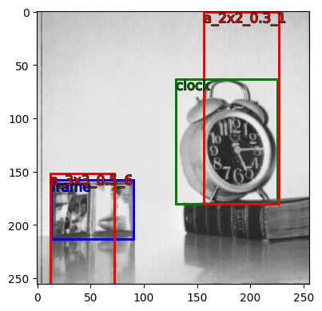

from pybx import anchor, ops
image_sz = (256, 256)
feature_sz = (10, 10)
asp_ratio = 1/2.
coords, labels = anchor.bx(image_sz, feature_sz, asp_ratio)PyBx
Installation
pip install pybxUsage
To calculate the anchor boxes for a single feature size and aspect ratio, given the image size:
100 anchor boxes of asp_ratio 0.5 is generated along with unique labels:
len(coords), len(labels)(100, 100)The anchor box labels are especially useful, since they are pretty descriptive:
coords[-1], labels[-1]([234, 225, 252, 256], 'a_10x10_0.5_99')To calculate anchor boxes for multiple feature sizes and aspect ratios, we use anchor.bxs instead:
feature_szs = [(10, 10), (8, 8)]
asp_ratios = [1., 1/2., 2.]
coords, labels = anchor.bxs(image_sz, feature_szs, asp_ratios)All anchor boxes are returned as ndarrays of shape (N,4) where N is the number of boxes.
The box labels are even more important now, since they help you uniquely identify to which feature map size or aspect ratios they belong to.
coords[101], labels[101](array([29, 0, 47, 30]), 'a_10x10_0.5_1')coords[-1], labels[-1](array([217, 228, 256, 251]), 'a_8x8_2.0_63')MultiBx methods
Box coordinates (with/without labels) in any format (usually ndarray, list, json, dict) can be instantialized as a MultiBx, exposing many useful methods and attributes of MultiBx. For example to calculate the area of each box iteratively:
from pybx.basics import *
# passing anchor boxes and labels from anchor.bxs()
print(coords.shape)
boxes = mbx(coords, labels)
type(boxes)(492, 4)pybx.basics.MultiBxlen(boxes)492areas = [b.area for b in boxes]Each annotation in the MultiBx object boxes is also a BaseBx with its own set of methods and properties.
boxes[-1]BaseBx(coords=[[217, 228, 256, 251]], label=['a_8x8_2.0_63'])boxes[-1].coords, boxes[-1].label([[217, 228, 256, 251]], (#1) ['a_8x8_2.0_63'])MultiBx objects can also be “added” which stacks them vertically to create a new MultiBx object:
boxes_true = mbx(coords_json) # annotation as json records
len(boxes_true)2boxes_anchor = mbx(coords_numpy) # annotation as ndarray
len(boxes_anchor)492boxes_trueMultiBx(coords=[[130, 63, 225, 180], [13, 158, 90, 213]], label=['clock', 'frame'])boxes = boxes_true + boxes_anchor + boxes_truelen(boxes)496Use ground truth boxes for model training
from pybx.anchor import get_gt_thresh_iou, get_gt_max_iou
from pybx.vis import VisBximage_sz(256, 256)boxes_trueMultiBx(coords=[[130, 63, 225, 180], [13, 158, 90, 213]], label=['clock', 'frame'])Calculate candidate anchor boxes for many aspect ratios and scales.
feature_szs = [(10, 10), (3, 3), (2, 2)]
asp_ratios = [0.3, 1/2., 2.]
anchors, labels = anchor.bxs(image_sz, feature_szs, asp_ratios)Wrap using pybx methods. This step is not necessary but convenient.
boxes_anchor = get_bx(anchors, labels)
len(boxes_anchor)341The following function returns two positive ground truth anchors with largest IOU for each class in the label bounding boxes passed.
gt_anchors, gt_ious, gt_masks = get_gt_max_iou(
true_annots=boxes_true,
anchor_boxes=boxes_anchor, # if plain numpy, pass anchor_boxes and anchor_labels
update_labels=False, # whether to replace ground truth labels with true labels
positive_boxes=1, # can request extra boxes
)gt_anchors{'clock': BaseBx(coords=[[156, 0, 227, 180]], label=['a_2x2_0.3_1']),
'frame': BaseBx(coords=[[12, 152, 72, 256]], label=['a_3x3_0.5_6'])}all_gt_anchors = gt_anchors['clock'] + gt_anchors['frame']
all_gt_anchors/mnt/data/projects/pybx/pybx/basics.py:464: BxViolation: Change of object type imminent if trying to add <class 'pybx.basics.BaseBx'>+<class 'pybx.basics.BaseBx'>. Use <class 'pybx.basics.BaseBx'>+<class 'pybx.basics.BaseBx'> instead or basics.stack_bxs().
f"Change of object type imminent if trying to add "MultiBx(coords=[[156, 0, 227, 180], [12, 152, 72, 256]], label=['a_2x2_0.3_1', 'a_3x3_0.5_6'])v = VisBx(pth='../data/', img_fn='image.jpg', image_sz=image_sz)
v.show(all_gt_anchors, color={'a_2x2_0.3_1':'red', 'a_3x3_0.5_6': 'red'})<AxesSubplot:>
More exploratory stuff in the walkthrough notebook or